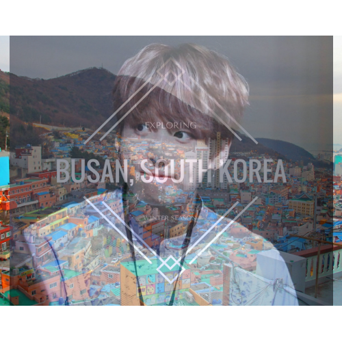
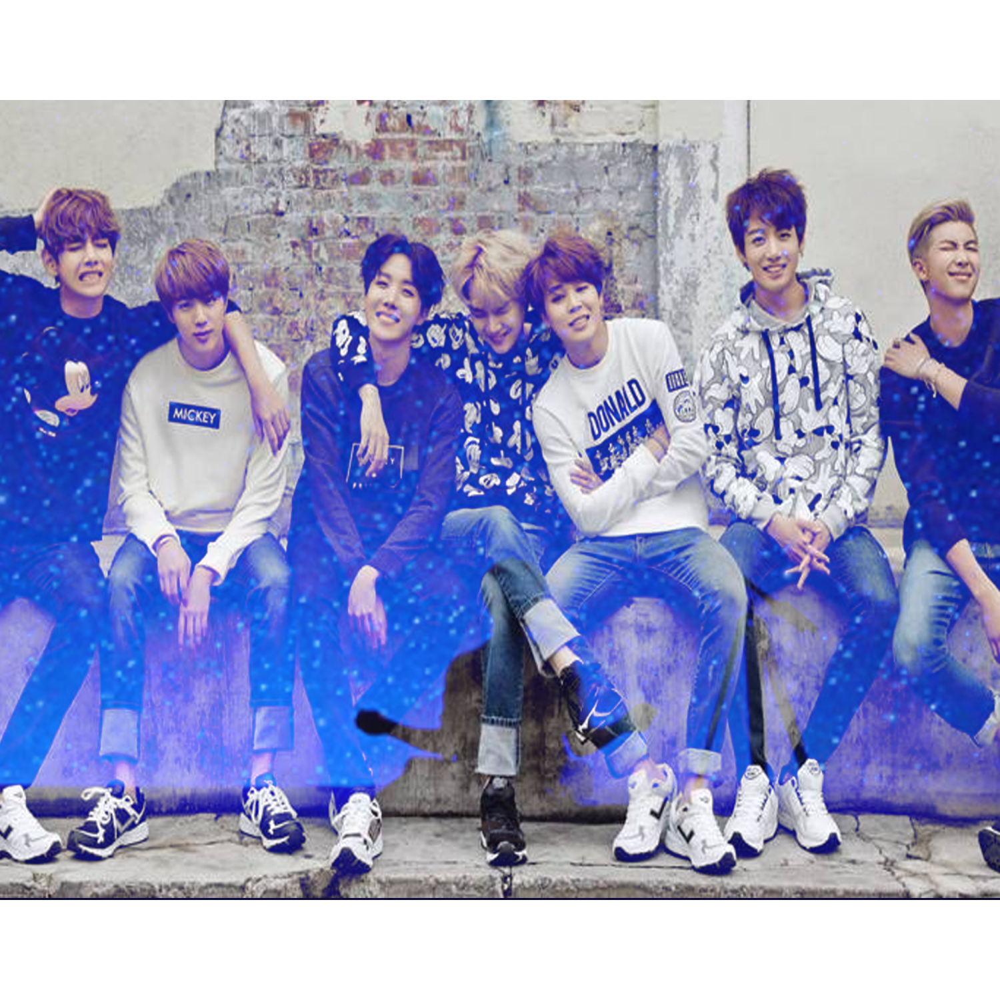
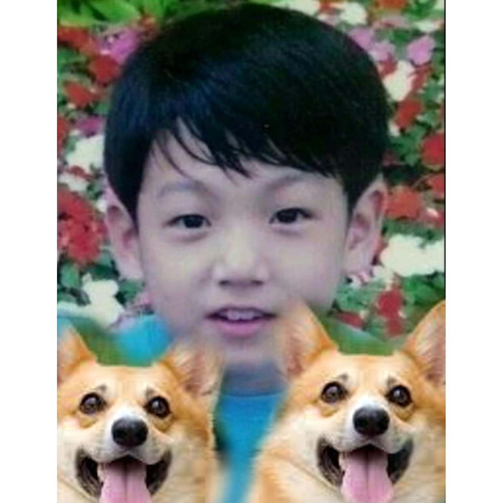
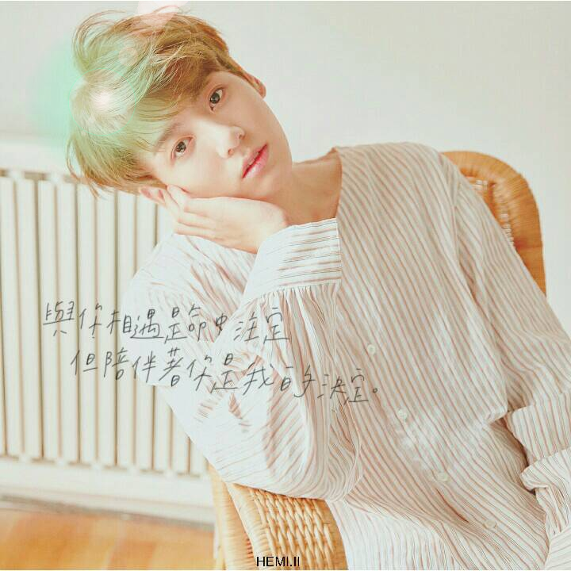
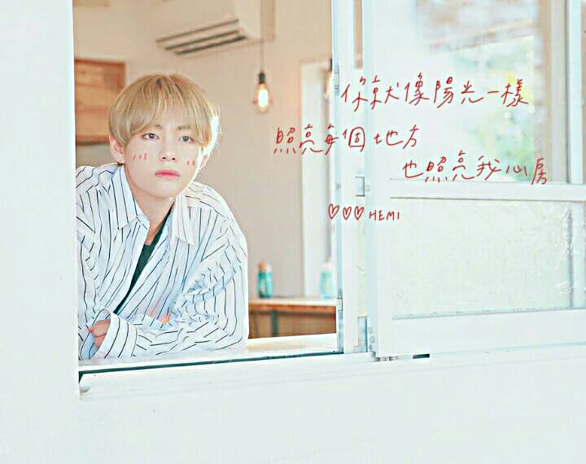
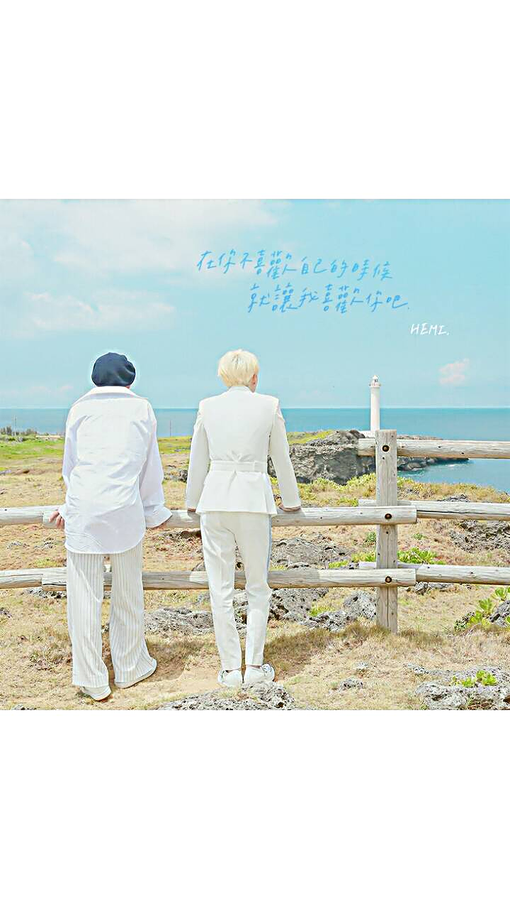
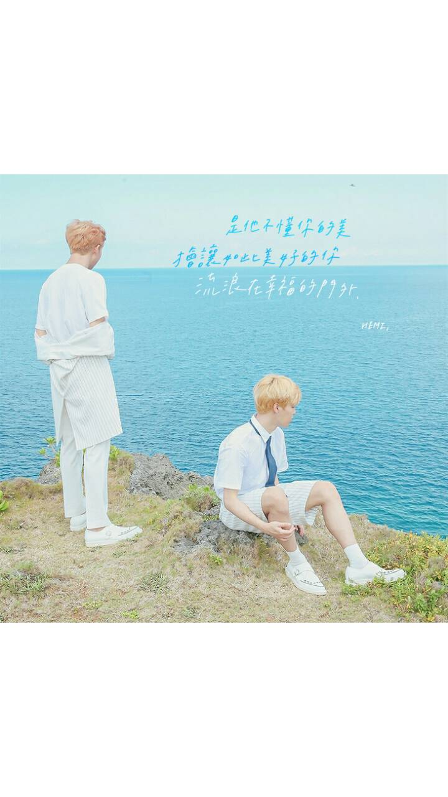
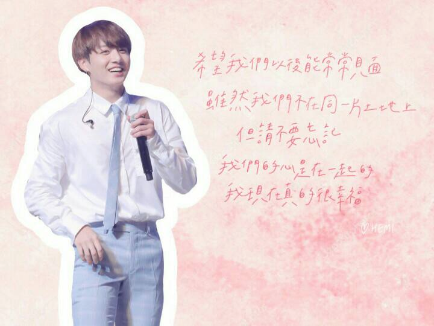
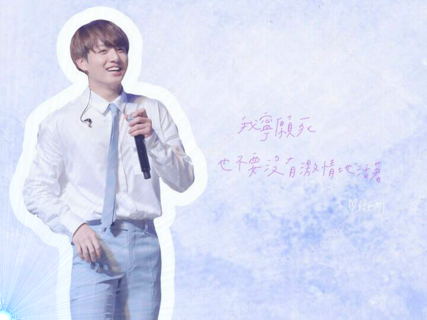

A well done singer I like-BTS Jungkook
The place he born- Busan, South Korea

Lovely group he joined-BTS

-Jungkook and Suga also Ryan-

~Young Jungkook and his favorite animal~

Jungkook's pic in thier album-Love yourself

Encounter with you is meant to be, but stay with you is my decision.
One of Jungkook's friend-V

You are just like the sun, illuminate every place and also my heart.
BTS's other members- Suga and V

When you don't love yourself, just let me love you.
BTS's other members- RM and Jimin

He doesn't understand your beauty, and let full of glorious you stay outside of happiness.
#Jungkook's quotes#
Jungkook's first quote

"I hope we can meet often later. Although we are not in the same land, please don't forget that our heart is connected together. I am really blessed now."
Jungkook's second quote
"Effort makes you. You will regret someday if you don't do your best now. Don't think it's too late but keep working on it. It may take time, but there's nothing that gets worse due to practicing. So practice. You may get depressed, but its evidence that you are doing good."
Jungkook's third quote

"I'd rather die than live without passion."